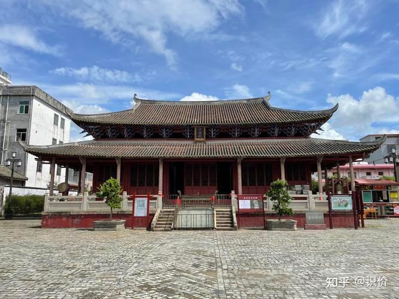
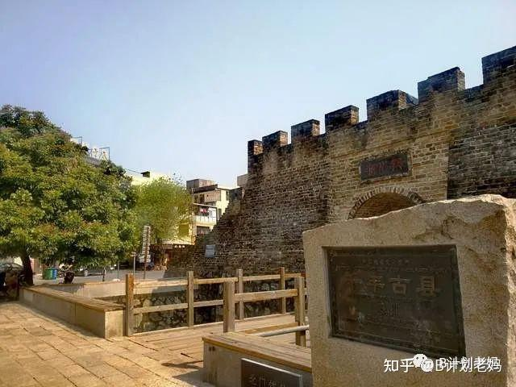

佗城
佗城，古称龙川城，始建于公元前214年，是秦始皇平定南越后设立的县治所。为纪念首任县令赵佗，后更名为佗城。佗城被誉为“世界客家古邑、岭南文化名城”，是岭南四大古邑中保存完整的古城之一，有“岭南第一古镇”之称，历史可追溯至2225年前。佗城保存有众多历史遗迹，包括秦朝的越王井、赵佗故居；唐代的正相塔；宋代的越王庙、古城墙、循州治所；明代的城隍庙；清代的学宫、考棚等100多处文物古迹。佗城镇人口四万，却有179个姓氏，其中佗城村二千多人就有140个姓，极为罕见。佗城还是全国学宫与考棚共存的四个地方之一，拥有89间有历史记载的姓氏古祠堂，现存48间，被誉为“中华姓氏古祠堂博物馆”。
